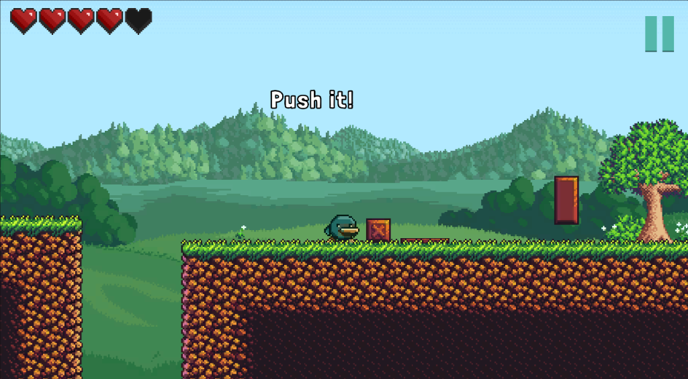
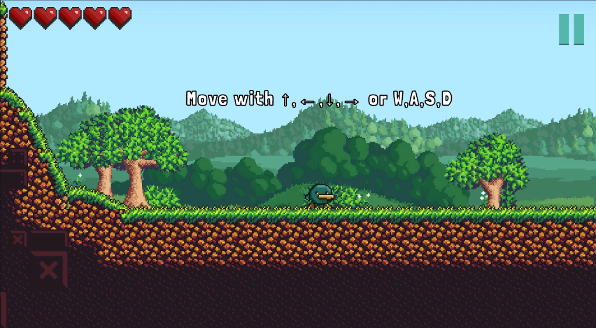
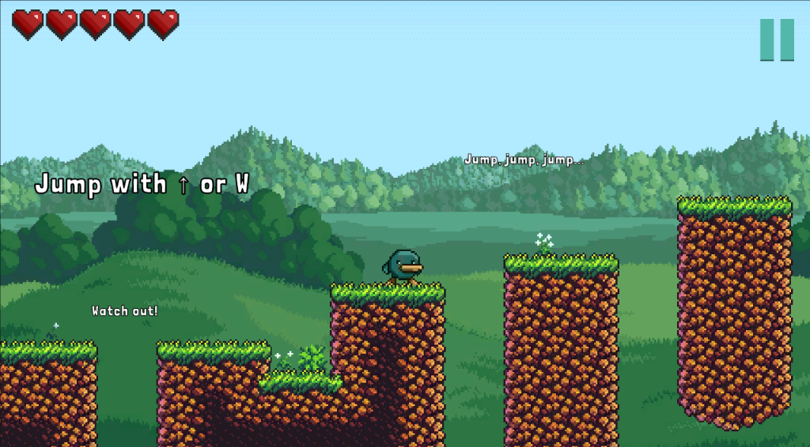

The Valley Without a Name
Once, the valley had a name that people spoke like a song. Then the mist rolled in from the mountain pass, and one morning the name was simply gone — along with the road home, and the faces of everyone who knew it.
a 2D adventure platformer
Every lost memory returns as mist. You carry the last lantern — and the valley still remembers your name.
three chapters from the valley
Once, the valley had a name that people spoke like a song. Then the mist rolled in from the mountain pass, and one morning the name was simply gone — along with the road home, and the faces of everyone who knew it.
You wake at the valley's edge with a lantern already burning beside you. It does not need oil and it does not go out. Somewhere in the mist, a bell rings once — and the lantern tilts toward it, as if it knows the way.
The mist is not weather. It is what the valley kept instead of its name: memories, promises, little losses. Carry the light far enough, and the world begins to remember you — every stone, every gate, every quiet friend.
footage from the early build
three moods, one valley
where the game begins
Soft light, tall grass, and the first hidden corners. The lantern burns brightest here, before the world grows strange.
a drowned building of echoes
Water remembers everything. Puzzles here are slower and darker, and every footstep answers from somewhere far below.
where the story opens
Broken arches above a valley that refuses to be forgotten. The truth about the mist is buried here — if you dare to dig.
the ones you meet on the way
protagonist
Woke up with a lantern, no memory, and a long road ahead. Quietly curious about everything.
guide
Lives at the edge of the valley, speaks in riddles, and remembers more than he admits.
protector
A mossy guardian of the old paths. Not unfriendly — just very, very thorough.
light
Not a person and not exactly a fire. Only shows the way when you stop rushing.
a few frames from the valley



small promises, big walks
No timers. Every screen rewards whoever stops to look.
Every ledge, stone and bush was put where it is on purpose.
Hidden rooms and small surprises for the patient explorer.
No cutscenes. The valley tells its own story as you walk it.
our trail toward version 1.0
Core movement, the opening stretch of Mistvale, and the lantern mechanic.
Darker lighting, puzzle blocks, and the first real echo of the old story.
Longer jumps, patient enemies, and the truth waiting under the arches.
questions we have actually been asked
Not yet. Sperio is an early build — the valley is still growing, and every update adds new ground to wander.
The early build is free. If the valley ever becomes a full release, the price will be gentle — that is a promise we keep.
Yes — small, honest updates as the project moves. The roadmap above is exactly where we are headed.